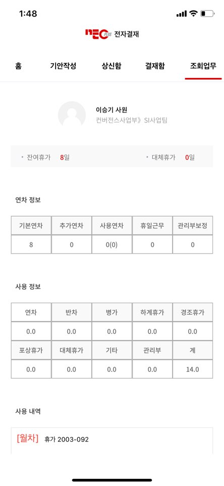
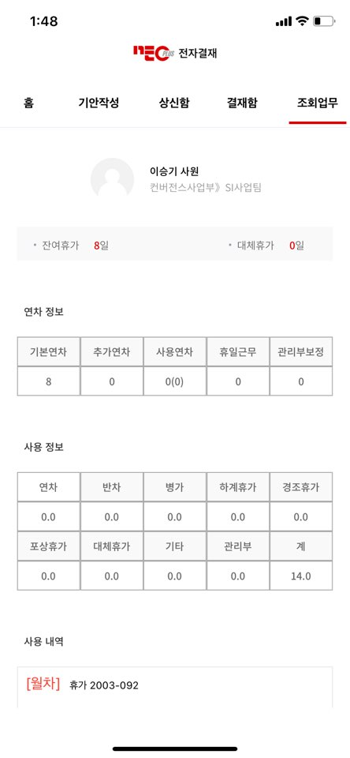

MDS Tech(2022년 12월 ~ 2024년 3월)
파킹프렌즈 앱
- MDS Tech의 파킹프렌즈 앱은 전임자가 오랫동안 부재한 상태로 방치되어 많은 고객 불만이 쌓여 있었습니다. 특히, 가장 많은 불만을 받았던 부분은 메인 지도 화면이었습니다. 저는 사용자의 피드백을 반영하여 메인 화면을 대대적으로 리팩토링하였습니다. 기존 UI는 크기가 작아 사용성에 불편을 주었고, 이로 인해 지속적인 CS 요청이 있었습니다. 이를 해결하기 위해 기획과 디자인을 새롭게 개선하였으며, 사용자 테스트를 통해 UI 구성 요소를 재배치하고 크기를 확장했습니다. 또한 RxSwift를 사용하여 데이터 바인딩을 단순화하여 유지보수성과 성능을 모두 개선하였습니다. 팩토리 패턴을 활용해 의존성을 분리함으로써 뷰와 뷰모델 간의 결합도를 낮추고, 코드의 재사용성과 테스트 용이성을 높였습니다. 이러한 개선 이후, 지속적인 안정화 작업을 통해 쌓여 있던 CS를 0%까지 감소시키는 성과를 거둘 수 있었습니다.
사용 기술: Swift, RxSwift, Kotlin, RxKotlin


파킹프렌즈 파트너 앱
- 이 프로젝트는 전임자가 중도 퇴사하며 제가 맡게 되었습니다. 팀 내에 React 경험이 있는 사람이 없어 어려운 상황이었지만, 조기 종료된 다른 업무의 여유를 활용해 이 프로젝트를 맡기로 결정했습니다. React는 저에게도 처음이었기 때문에 독학으로 React를 학습하면서 요구사항을 개발하고, 필요한 기능을 추가했습니다. 이후 앱을 성공적으로 배포하고, 유지보수까지 담당하며 프로젝트를 지속적으로 관리했습니다.
사용 기술: React, Swift, Kotlin

ICB(2021년 1월 ~ 2022년 11월)
GOS 앱
- 입사했을 때, 인원이 적어 급한 개발 요청이 있을 때 대처하기 어려운 상황이 자주 발생했고, 특히 결제와 관련된 중요한 작업에서는 인원 부족 시 큰 문제가 될 수 있었습니다. 이러한 문제를 해결하기 위해 제가 맡은 첫 번째 과제는 GOS 앱 구조의 통일화와 모듈화였습니다. iOS와 안드로이드 모두 동일한 구조를 유지하도록 Layer를 3단계로 나누어 MVP 아키텍처를 구축하고, 로직, 클래스 이름, 변수명 등 세세한 부분까지 통일화하였습니다. 이를 통해 플랫폼 간 일관성을 확보하고, 유지보수 효율성을 크게 향상시킬 수 있었습니다.
사용 기술: Objective-C, Swift, Kotlin, Java


Qrick 앱
- Qrick 앱은 해외 결제사 또는 카카오페이 같은 결제 서비스를 오프라인에서 QR 코드나 바코드를 통해 결제할 수 있도록, Qrick 앱에 충전된 외화를 사용하는 결제 서비스입니다. 이 프로젝트의 작업 중 하나는 해외 앱과 결제 서비스를 연동할 때, 해외 결제사가 승인을 완료할 때까지 앱에서 반복적으로 요청을 보내야 하는 로직을 구현하는 것이었습니다. 이를 위해 폴링(polling) 기법을 사용하여 네트워크 요청을 반복적으로 진행하였고, 이로써 성공적으로 결제 서비스를 완성할 수 있었습니다.
사용 기술: Objective-C, Swift, Kotlin, Java


네오플러스(2019년 7월 ~ 2020년 5월)
지아이티 - 글로벌 서비스 앱 개발
- 네오플러스의 글로벌 서비스 앱 개발 프로젝트에서는 멕시코, 러시아, 인도 등의 각국 지역에 맞는 서비스를 제공하기 위해 언어팩을 적용하고 화면을 현지화했습니다. 차량 펌웨어와 연동해 다양한 기능을 구현하면서 현지화 작업을 성공적으로 완료하고, 테스트 단계에서도 신속하게 이슈를 해결해 프로젝트 일정을 앞당겼습니다.
사용 기술: Objective-C, Swift, Masonry, Firebase, Google Maps, FMDB
사내인트라넷 개발
- 네오플러스에서는 사내 인트라넷 앱을 개발하는 프로젝트를 담당했습니다. 기존에는 안드로이드 버전만 존재하던 사내 인트라넷 앱을 iOS 버전으로도 개발하기 위해 제가 주도적으로 프로젝트를 제안하고, 이를 수행했습니다. 이를 통해 iOS 디바이스를 사용하는 직원들도 휴가 정보나 사내 연락처 조회 등 사내 업무를 더 편리하게 이용할 수 있게 되었으며, 회사 내부 업무의 효율성을 높이는 데 기여했습니다.
사용 기술: Swift, SwiftyJSON, Alamofire, KeychainSwift, SnapKit, FSCalendar
 
